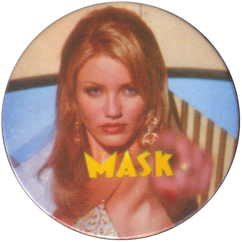

The Mask
La máscara (título original: The Mask) es una película estadounidense de comedia y fantasía de 1994 dirigida por Chuck Russell y protagonizada por Jim Carrey, Cameron Diaz y Peter Greene. La cinta es una libre adaptación del cómic del mismo nombre creado por Mike Richardson para Dark Horse Comics.
La película lideró el ranking nacional de recaudación en su año de estreno e impulsó a Carrey como uno de los actores de comedia dominantes de los años 1990. Consagró además la carrera de Cameron Diaz. Carrey fue nominado a los premios Globos de Oro por esta película, que estuvo nominada a los Premios Oscar por mejores efectos visuales, perdiendo el galardón ante Forrest Gump, cuyos efectos también fueron realizados por ILM.
Índice
Argumento
La película inicia con un buzo que lleva a cabo actividades submarinas en la costa de la ciudad, ahí accidentalmente abre una caja de metal que lleva siglos en el fondo del mar, de este sale una máscara de madera y metal que flota y es llevada por la marea hacía la ciudad. A partir de aquí la trama se desarrolla en Edge City (Ciudad Límite) y gira alrededor de la vida de dos hombres: El primero es Stanley Ipkiss (Jim Carrey), un torpe y tímido ejecutivo bancario fanático de las caricaturas quien es constantemente maltratado y humillado por los que le rodean: su jefe, su casera etc. Sus únicos amigos son su perro Milo y su compañero Charlie Schumacher (Richard Jeni). El otro hombre es Dorian Tyrell (Peter Greene), un hampón dueño del club Coco Bongo, que usa como tapadera para sus negocios ilícitos, los cuales desea expandir para desbancar al rey del crimen de la ciudad, Niko (Orestes Matacena). Las vidas de estos dos hombres se cruzan cuando Tyrell envía a su novia, Tina Carlyle (Cameron Diaz) al banco donde trabaja Stanley, con la excusa de abrir una cuenta para fotografiar la caja fuerte con una cámara oculta y así planear un robo.
Reparto
- Jim Carrey como Stanley Ipkiss / La Máscara: El protagonista de la película. Jim Carrey, quien interpreta a Stanley Ipkiss, comentó que caracterizó a Ipkiss como a su padre: «un buen tipo, sólo tratando de ser lo que es». Cuando Ipkiss se coloca la máscara, invierte su personalidad desgarbada, muy noble y torpe, a una loca, caricaturesca y simpática persona; también es capaz de manipular su propia forma y el mundo que le rodea, lo que implica la proyección sobre sí mismo, de sus sueños y fantasías.
- Cameron Diaz como Tina Carlyle: La novia del mafioso Dorian Tyrell, pero luego se siente atraída por Stanley Ipkiss. Tina se siente insatisfecha por la forma en que la trata Dorian, pero no lo desafía, hasta su encuentro con La Máscara en el Club Coco Bongo, encuentro que la deja impresionada. Incluso llega a tener una cita romántica con él, con desastroso final. Más tarde, intenta escapar de Dorian, pero este la captura y luego, en el asalto al casino, le hace pagar su traición amarrándola a un árbol, junto a la bomba que tenía preparada para hacer explotar todo el lugar. Afortunadamente, por un descuido de Dorian, el plan de este se echa a perder e Ipkiss logra salvarla, quedándose juntos. Antes que Díaz fuera escogida para el papel, se consideró a Vanessa L. Williams y Kristy Swanson para el papel. Incluso, hubo una oferta por parte del estudio, para Anna Nicole Smith.
- Peter Greene como Dorian Tyrell: El antagonista principal de la película. Dorian es un líder de la mafia local, que desea deshacerse de su superior, Niko, debido a la presión que ejerce sobre él. Después que Ipkiss, como La Máscara, le arruina su plan de robar el banco para lograr su objetivo principal, decide perseguirlo y acabarlo, llegando a hacer que Peggy lo traicione. Cuando Dorian logra tener la máscara y se la coloca, su rostro adquiere una forma grotesca, una figura que representa su malicia, exhibiendo un comportamiento bestial.
- Orestes Matacena como Niko: El jefe de la mafia de Edge City y el propietario del Club Coco Bongo. Ha sido perseguido durante mucho tiempo por el Teniente Kellaway, pero en última instancia, es asesinado por Dorian.
Personajes
Stanley Ipkiss/La Máscara

Tina Carlyle
Banda sonora
La banda sonora The Mask: Music From The Motion Picture fue lanzada el 26 de julio de 1994 por Chaos Records, en asociación con Sony Music Entertainment, e incluye canciones de Xscape, Tony! Toni! Toné!, Vanessa Williams, Harry Connick, Jr., el mismo Jim Carrey y varios otros.Lista de canciones
- «Cuban Pete» (Versión de C & C Pop Radio) - Jim Carrey
- «Who's That Man» - Xscape
- «This Business Of Love» - Domino
- «Bounce Around» - Tony! Toni! Toné!
- «(I Could Only) Whisper My Name» - Harry Connick, Jr.
- «You Would Be My Baby» - Vannesa Williams
- «Hi De Ho» - K7
- «Let The Good Times Rolls» - Fishbone
- «Straight Up» - The Brian Setzer Orchestra
- «Hey! Pachuco» - Royal Crown Revue
- «Gee Baby, Ain't I Good To You» - Susan Boyd
- «Cuban Pete» (Versión De La Película) - Jim Carrey
Banda sonora de Randy Edelman
El score fue publicado poco después del lanzamiento del disco anterior, la orquesta fue dirigida por el músico Randy Edelman y la Orquesta Cinematográfica de Irlanda.Lista de canciones
- «Opening - The Origin Of The Mask»
- «Tina»
- «Carnival»
- «Transformation»
- «Tango In The Park»
- «Lovebirds»
- «Out Of The Line Of Fire»
- «A Dark Night»
- «The Man Behind The Mask»
- «Dorian Gets A New Face»
- «Looking For A Way Out»
- «The Search»
- «Forked Tongue»
- «Milo To The Rescue»
- «The Mask Is Back»
- «Finale»
Secuelas
Tras el suceso de La máscara, fue inicialmente anunciada una secuela. Sin embargo, el mismo Jim Carrey se encargó de negar esta teoría. En 2005 fue estrenada una secuela, Son of the Mask, sin la participación de Carrey. La cinta fue vapuleada por la crítica y cuenta con un ínfimo 6% de ranking aprobatorio en Rotten Tomatoes. Sobre la posibilidad de realizar una tercera película, Mike Richardson ha afirmado: «Hemos hablado de revivir a La máscara, tanto en el cine como en la historietas. Hemos hecho un par de salidas en falso».Novelización
En 1994 se publicó la novelización de la película a cargo del autor Steve Perry. Esta relata los eventos de forma prácticamente similar a la película, siendo las únicas diferencias notables que, según el relato, Peggy si es asesinada en la imprenta, y que al inicio se narra como es que en la época precolombina un navío vikingo pasó meses en el mar con una caja atada con cadenas y conjuros para evitar que se abriera o extraviara buscando el confín del mundo para abandonarla allí, dentro de la caja se encuentra el dios Loki encarcelado en una máscara que le quita la libertad pero no restringe totalmente su poder. Tras acabar su viaje logran llegar hasta lo que en el futuro será la playa de Edge City, desembarcan la caja y la entierran con ayuda de una hechicera para después alejarse de vuelta a su tierra.